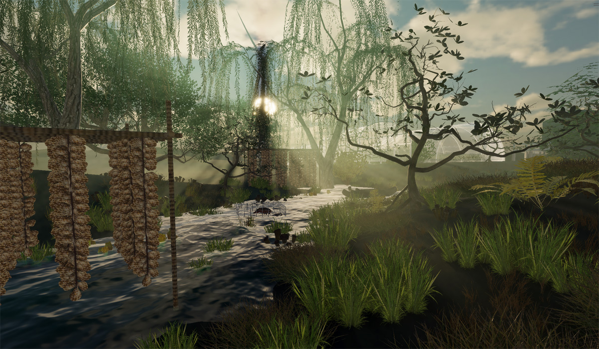
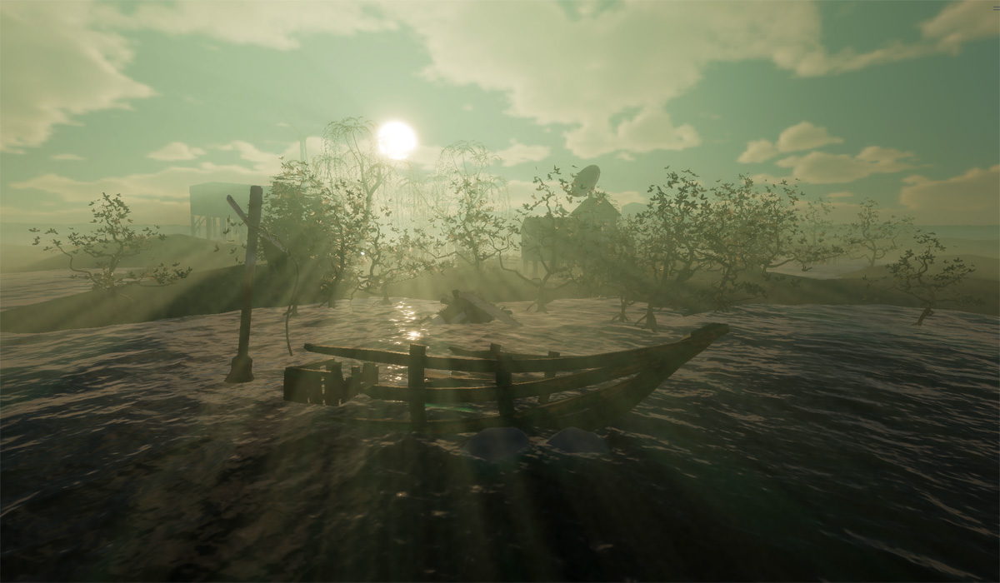
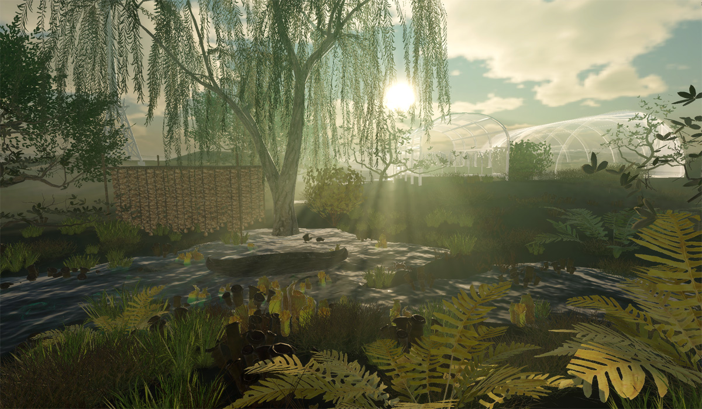
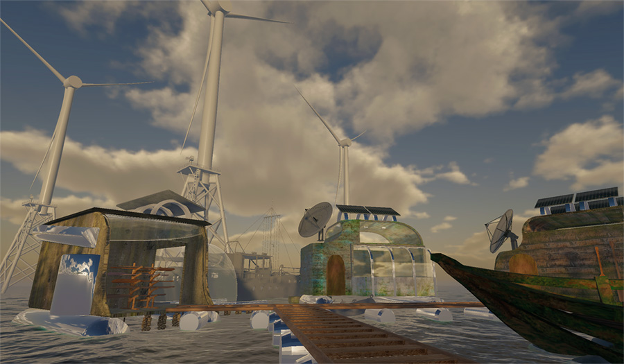
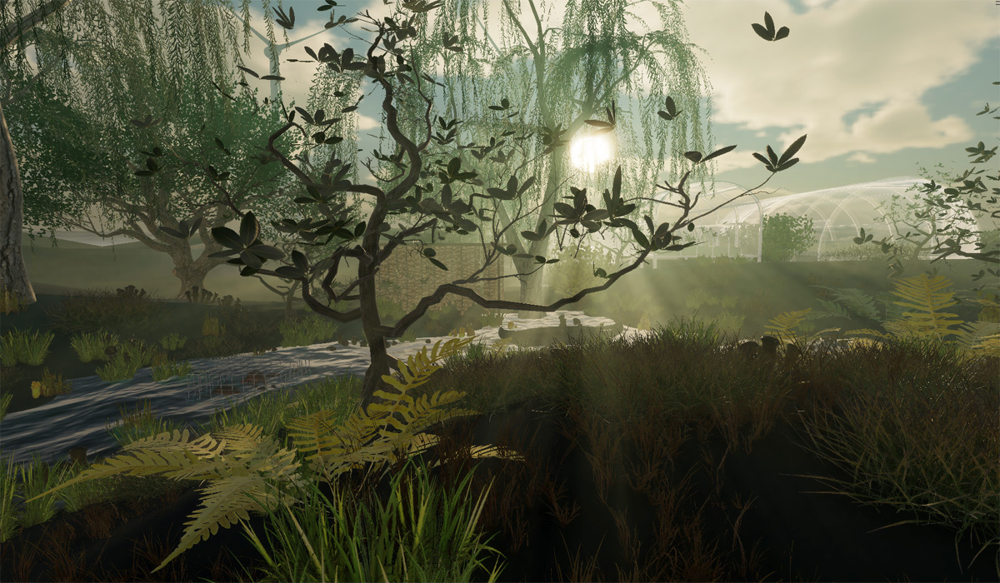
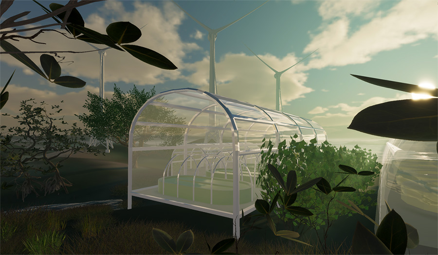
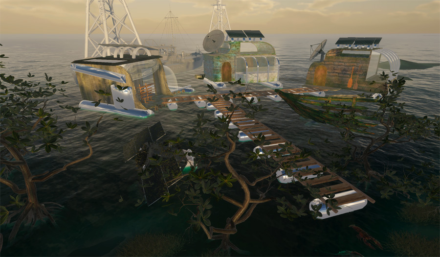

Tidelands 2100: Imagining Coastal Futures Beyond Displacement
Tidelands 2100 is an immersive game and exploratory film visualizing the Rhode Island coastal community in the year 2100. Rather than accepting narratives of coastal abandonment, Tidelands explores how communities with deep ties to the shore— fishermen, oyster harvesters, and aquaculturists— might adapt and thrive despite rising seas. Centered around a sealife harvest festival, this XR experience visualizes a future where mutualist systems build coastal resilience rather than geographic displacement.
In my role as lead 3D Artist and Art Director, I’ve modeled flora and fauna, created a working prototype in Unity, and integrated real-world sea level rise data into the generated terrain.







